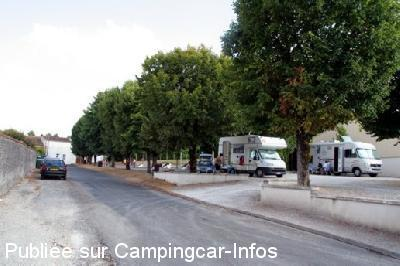
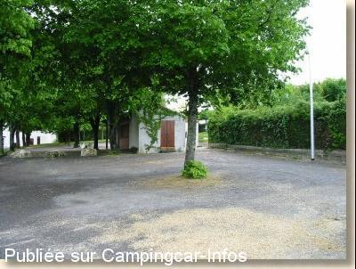

ASN = Aire de services avec stationnement nuit possible de :
SEGONZAC
(N° 752)
Accès/adresse :
Rue Gourry
16130 SEGONZAC
16130 SEGONZAC
Latitude : (Nord) 45.61486° Décimaux ou 45° 36′ 53′′
Longitude : (Ouest) -0.22138° Décimaux ou 0° 13′ 16′′
Tarif : Gratuit
Type de borne : Artisanale
Services :


Commerces
Autres informations :
Ouvert toute l'année
4 emplacements
Éclairage de la plate-forme de vidange
Tel : + 33 (0)545 834 041

Le 04/01/2009 par martoine

Le 11/03/2007 par christianbrieuc
de
Benard
le 28/12/2013 :
Aire très accueillante.
Tout gratuit,les personnes habitants ce village, super sympa.
Quand à l'Office du tourisme,Marylin est d'un professionnalisme et d'une gentillesse hors normes.
Des normands qui ont passés, deux jours formidables au mois d'octobre.
Michel et Annick
Aire très accueillante.
Tout gratuit,les personnes habitants ce village, super sympa.
Quand à l'Office du tourisme,Marylin est d'un professionnalisme et d'une gentillesse hors normes.
Des normands qui ont passés, deux jours formidables au mois d'octobre.
Michel et Annick
de
LAMY claude et Annette 28
le 02/03/2013 :
Merci a cette commune pour l'acceuil.
les infrastructures sont top.
Les commerçants sont acceuillant également et
nous avons passés une nuit tres agreable et calme.
de Claude et Annette 28
Merci a cette commune pour l'acceuil.
les infrastructures sont top.
Les commerçants sont acceuillant également et
nous avons passés une nuit tres agreable et calme.
de Claude et Annette 28
de
loulou38
le 08/10/2010 :
Merci à la municipalité de Ségonzac. Les services sont trés bien conçus. Les habitants fort sympathiques. Aire calme, propre. Tout est gratuit. Village qui mérite un détours.
Merci à la municipalité de Ségonzac. Les services sont trés bien conçus. Les habitants fort sympathiques. Aire calme, propre. Tout est gratuit. Village qui mérite un détours.
de
Bernard TARTOIS
le 05/10/2010 :
Aire très petite pour 4 ou 5 CC maximum. Pleine lors de notre arrivée fin septembre, nous nous sommes garés dans la rue.
http://perso.orange.fr/bernard.tartois/ §
Aire très petite pour 4 ou 5 CC maximum. Pleine lors de notre arrivée fin septembre, nous nous sommes garés dans la rue.
http://perso.orange.fr/bernard.tartois/ §
de
billy40
le 15/08/2009 :
Aire très calme. Il y a 6 places. A proximité et à pied, se trouve un Intermarché et des magasins au village.
Aire très calme. Il y a 6 places. A proximité et à pied, se trouve un Intermarché et des magasins au village.
de
le 09/08/2008 :
Aire limitées à 4 places (avec possibilités de se mettre juste a côté sur la pleine), avec tout (eaux, vidanges et électricités gratuites, plaine de jeux pour les enfants et piste de pétanques pour les moins petits). Village agréable avec un office du tourisme au coeur de la région de Champagne de Cognac, village à voir, aire située a côté du producteur "Painturaux" de Cognac et de Pineau toujours très accueillant et sympathique pour ses dégustations de cognac et de Pineau ... L'aire est devenue un incontournable depuis 3 ans.
Aire limitées à 4 places (avec possibilités de se mettre juste a côté sur la pleine), avec tout (eaux, vidanges et électricités gratuites, plaine de jeux pour les enfants et piste de pétanques pour les moins petits). Village agréable avec un office du tourisme au coeur de la région de Champagne de Cognac, village à voir, aire située a côté du producteur "Painturaux" de Cognac et de Pineau toujours très accueillant et sympathique pour ses dégustations de cognac et de Pineau ... L'aire est devenue un incontournable depuis 3 ans.
de
alfred
le 04/11/2007 :
Bonsoir. Aire bien indiquée, WC propre avec papier.
Bonsoir. Aire bien indiquée, WC propre avec papier.
de
coco694
le 11/10/2007 :
De passage début juillet, nous y avons passé la nuit. L'accueil est très sympathique et le village très accueillant. Très propre, calme et gratuit ce qui ne gâche rien! A retenir!!!
De passage début juillet, nous y avons passé la nuit. L'accueil est très sympathique et le village très accueillant. Très propre, calme et gratuit ce qui ne gâche rien! A retenir!!!
de
Nenettemamita
le 20/07/2007 :
Chapeau à la mairie pour cette aire superbe, nous y sommes en sécurité avec tous les services gratuits (électricité compris). Quelle convivialité, tous commerces, joli village. 6 places mais un grand terrain boisé à côté qui permet d'autres stationnements. Nous y retournerons.
Chapeau à la mairie pour cette aire superbe, nous y sommes en sécurité avec tous les services gratuits (électricité compris). Quelle convivialité, tous commerces, joli village. 6 places mais un grand terrain boisé à côté qui permet d'autres stationnements. Nous y retournerons.
de
d. vacher
le 24/04/2007 :
Aire très bien réalisée et au calme
Aire très bien réalisée et au calme
de
Véronique&Pierre
le 21/02/2007 :
C'est une aire à mémoriser et à y retourner. Très agréable avec électricité permanente. Bravo et merci à la commune
C'est une aire à mémoriser et à y retourner. Très agréable avec électricité permanente. Bravo et merci à la commune
de
CLAUDE MAYER
le 02/01/2007 :
Avons passé deux nuits au calme, vidange facile, eau, électricité gratuite, stationnement pour 5 CC, terrain de pétanque à côté, commerces à proximité. Félicitation et bravo à la municipalité de SEGONSAC.
Avons passé deux nuits au calme, vidange facile, eau, électricité gratuite, stationnement pour 5 CC, terrain de pétanque à côté, commerces à proximité. Félicitation et bravo à la municipalité de SEGONSAC.